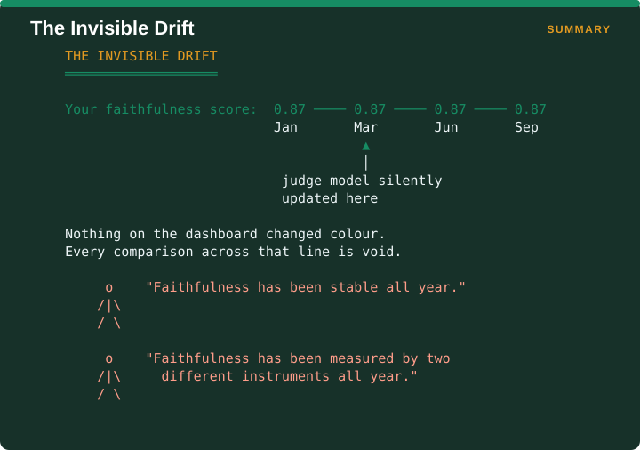
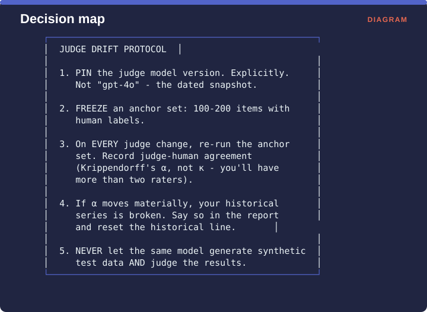

Measuring Retrieval › B.5 The open problem - judge drift
There is no metric for this, and that absence is the finding.

The figure shows what the failure looks like from the outside. A faithfulness score reads 0.87 in January, 0.87 in March, 0.87 in June and 0.87 in September. Somewhere between March and June the judge model was silently updated by its provider. Nothing on the dashboard changed colour, and every comparison spanning that line is void.
A team looking at that series will say faithfulness has been stable all year. What has actually happened is that faithfulness has been measured by two different instruments all year, and there is no way to tell from the numbers where one stopped and the other began.
The Brehme, Ströhle and Breu systematic review of 63 RAG evaluation papers (arXiv:2504.20119) states the problem directly. Rapid model development means advances could render previous evaluation results invalid, since a new model might produce entirely different outcomes, and it remains open how to adapt prior results or establish an evaluation standard that stays consistent independently of model version.
The same review supplies the number that makes this urgent. Of the 63 papers, 41 used language models as judges and only six compared those judges against human judges. Those six found a positive correlation, which is a weak bar to clear. The review also flags the circularity problem, noting it is unresolved whether evaluation quality is compromised when one model generates the questions, answers them, and then evaluates its own output.
Until somebody publishes a metric, follow this.

First, pin the judge model version explicitly, meaning the dated snapshot rather than a moving label like “gpt-4o”. Second, freeze an anchor set of 100 to 200 items carrying human labels. Third, on every judge change, re-run that anchor set and record the agreement between judge and human using Krippendorff’s α rather than Cohen’s κ, since you will have more than two raters. Fourth, if α moves materially, your historical series is broken, so say so in the report and reset the historical line rather than pretending the numbers still connect. Fifth, never let the same model generate your synthetic test data and also judge the results.
Step 5 is the one most commonly violated, usually without anyone realizing, by teams that adopted a single framework for both synthetic test generation and evaluation.
Measuring Retrieval · Madhava Gaikwad · First edition, September 2026